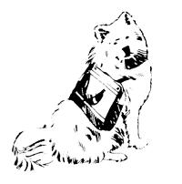

MIKI COLLINS
LEFT. Julie Collins and Trapper display the separate saddle that cushions the dog pack sold by Rae's Harness Shop.
ABOVE: Eastern Mountain Sports' small sack works well for day treks. RIGHT: The pouches on Alaska Tent & Tarp's high
volume model tie with drawstrings and permit the dog to tote a heavier load. BELOW. The patterns for a homemade
dog pack . . . and the completed carrier in use!Â